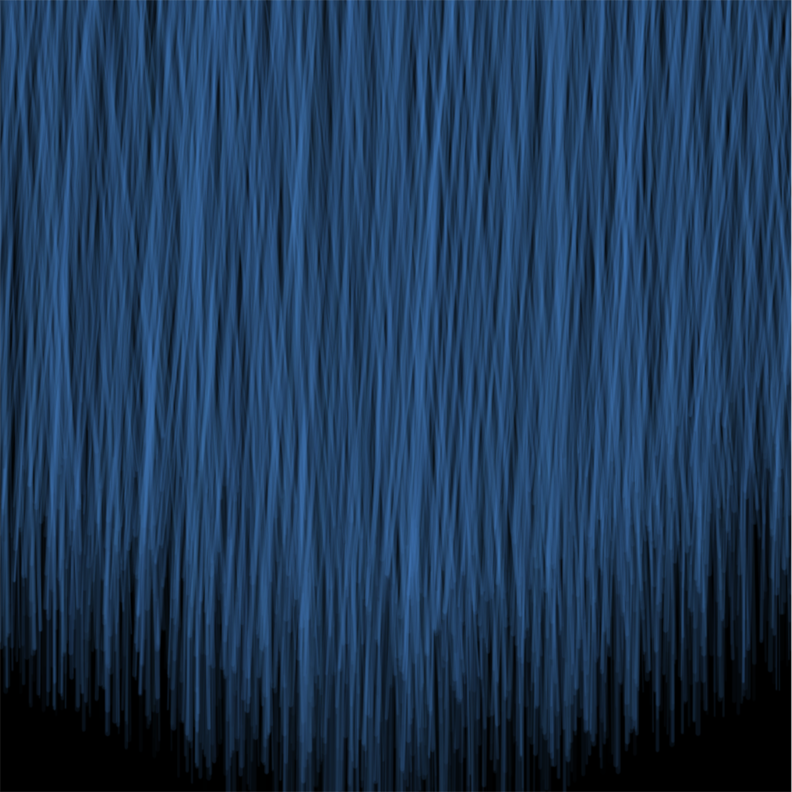
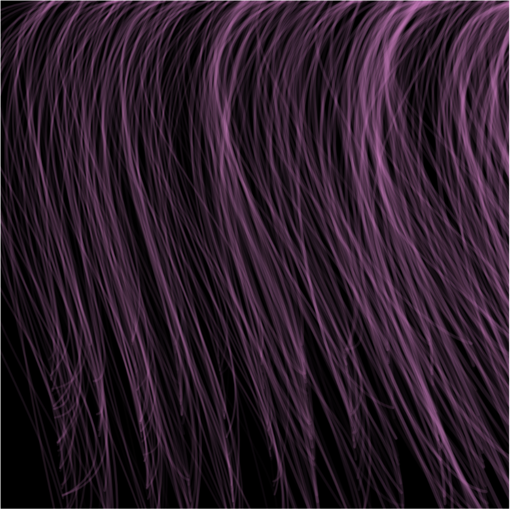
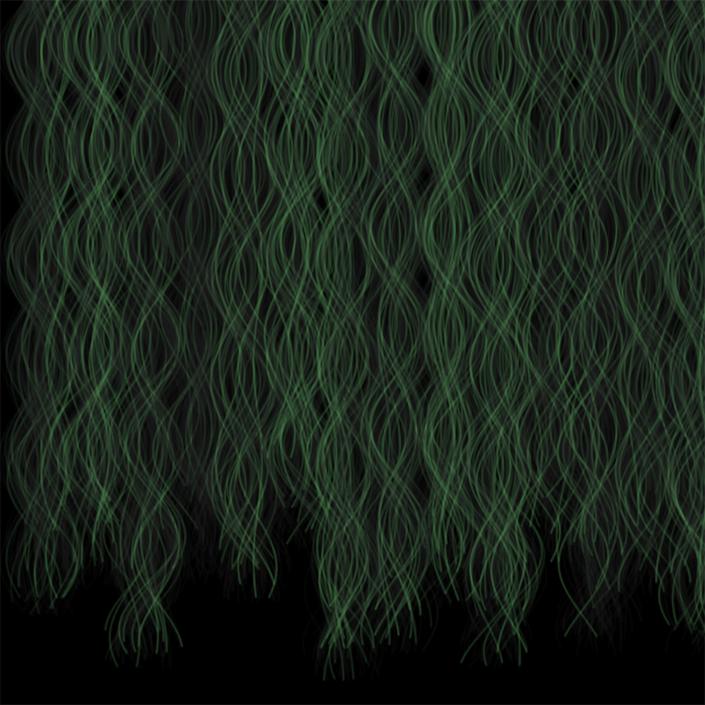
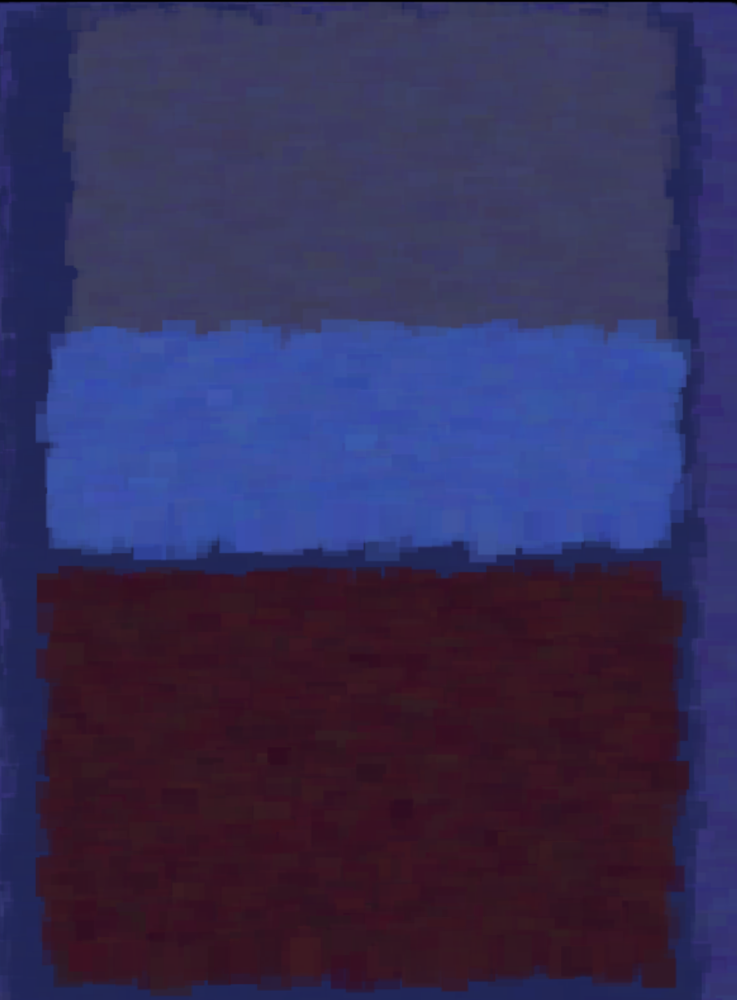
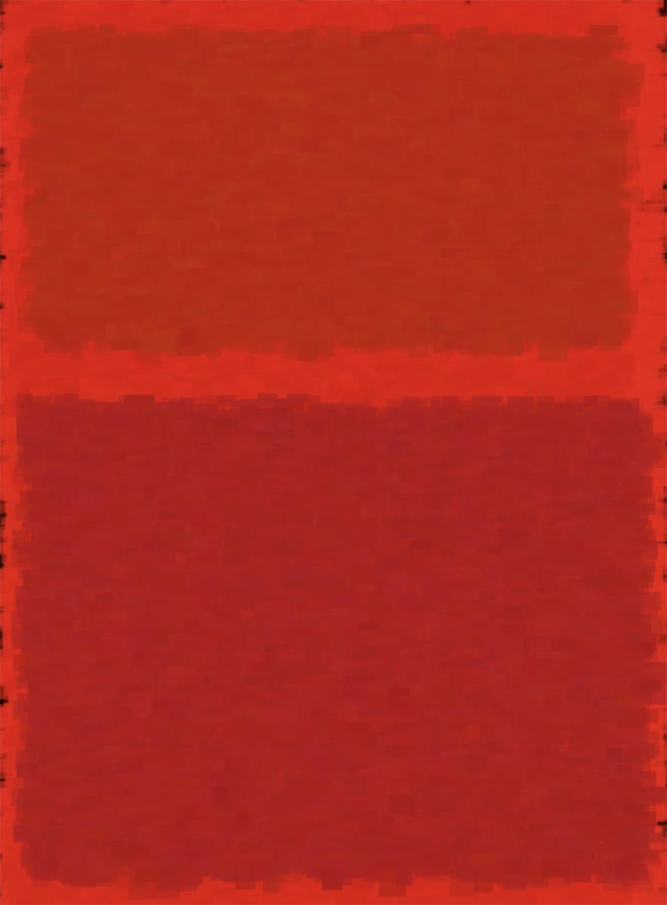
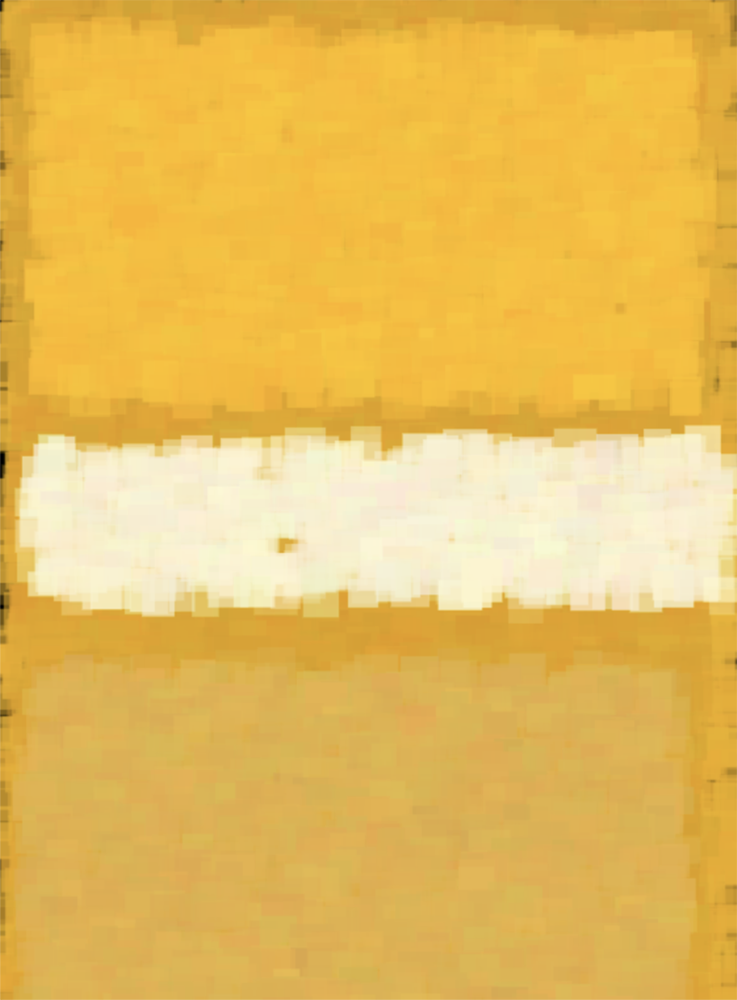

Generative Sketches
Computational form: make things that make things
These are highlights of an ongoing, daily self practice in which I explore weekly computational themes such as randomization,parameters, noise, and more through making "sketches" using programs such as javascript, p5.js, and unity
Noise
Randomization Hair Textures



Procedural Rothko Generator


